Chapter 25 Customizing the Operating Model
25.1 Accounting for Historical Changes in Fishing
In some circumstances there may be knowledge on the changes in fishing practices over the years, and it would be good to include this information in the Operating Model.
The Operating Model can be conditioned with respect to historical trends in the fishing mortality, historical changes in the selectivity pattern, and the existence of MPAs.
Remember to update and recompile the OM documentation whenever the OM is modified.
25.1.1 Historical Trends in Fishing Mortality
Suppose that we know the fishery began in 1950, and fishing effort increased slowly over the next decade, was relatively stable between 1960 and 1970, then increased dramatically over the next 10 years. We also know that, while fishing effort stayed relatively constant from 1980 to around 2000, there has been a general decline in fishing effort in recent years.
This information can be included in the Operating Model by using the ChooseEffort function. The ChooseEffort function takes an existing Fleet object as its first argument, and allows the user to manually map out the range for the historical trend in fishing effort. The ChooseEffort function then returns the updated Fleet object.
A second optional argument can be used to specify the historical years. If used, this will replace the nyears in the Fleet object with the length of the Years vector.
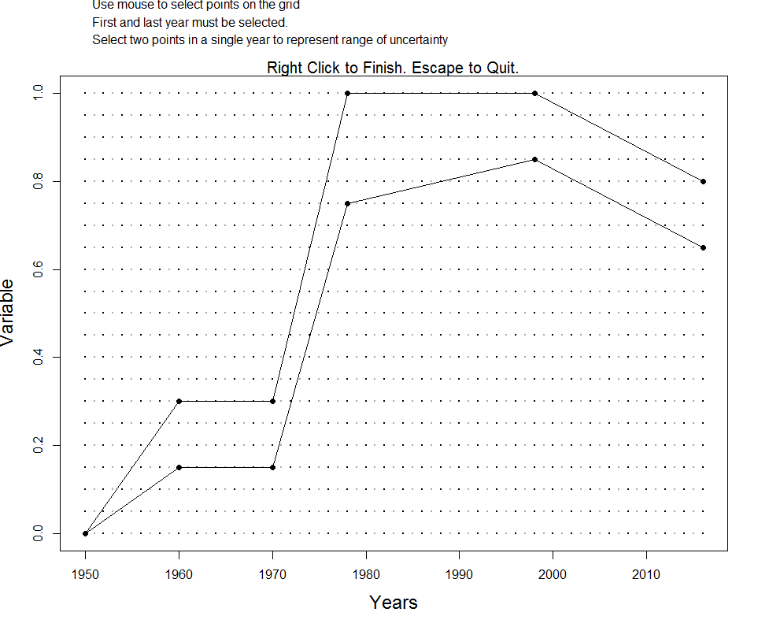
If we take a look at the MyFleet object, we will see that three slots EffYears, EffLower and EffUpper have been replaced with the new values.
Note that the trajectory that is mapped out here represents the bounds on the relative fishing mortality for each year. In this example, the fishing mortality rate was highest (on average) between 1980 and 2000, and is currently around 65 - 80% of this maximum level.
25.1.2 Historical Trends in Selectivity Pattern
Suppose that we may knew there had been changes in the selectivity pattern of the fishery over time. This information can be included in the Operating Model by using the ChooseSelect function.
Like the ChooseEffort function described above, the ChooseSelection function takes a Fleet object as it’s first argument, and returns an updated Fleet object.
Suppose the selectivity pattern changed in 1970 and then again in 1990, perhaps because of changes in fishing regulations. These change points in the selectivity curve can be mapped by the following command:
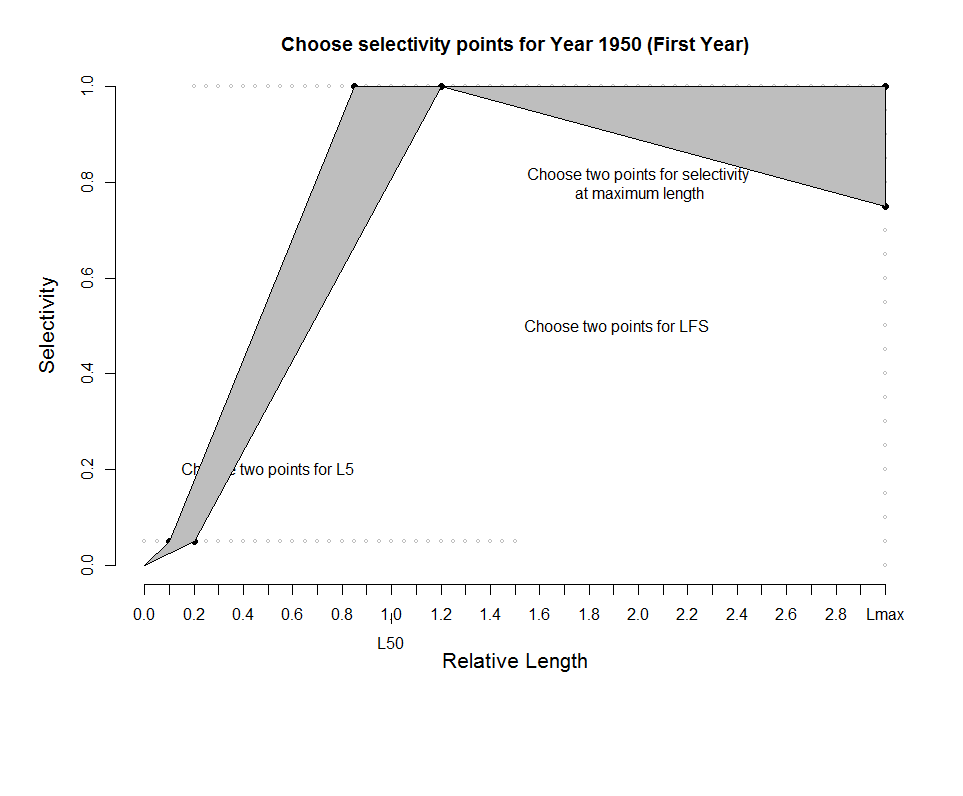
Note that the first year (FstYr) must also be specified, and the selectivity pattern is mapped for this year as well.
When ChooseSelect is used, the L5Lower, L5Upper, LFSLower, LFSUpper, VmaxLower, VmaxUpper, and SelYears slots are updated in the Fleet object. If these slots are populated, the values in the L5, LFS, and Vmaxlen slots are ignored in the operating model.
25.1.3 Including Existing MPAs
By default the MSE assumes that there are no spatial closures in the historical period. Existing spatial closures can be accounted for with the MPA slot in the Fleet or OM object.
To account for historical MPAs, the MPA slot should be a matrix with each row should containing a year index (e.g 10 for 10th historical year)
followed by fraction of area open to fishing for each area. i.e. each row represents a change and the number of columns is nareas (default is 2) + 1.
The spatial closures are assumed to remain in place for the future projections unless changed by a MP. Default (if left blank) is all areas are open to fishing in historical period.
For example:
OM <- new("OM", Albacore, Generic_Fleet, Perfect_Info, Perfect_Imp)
## 50% of Area 1 was closed 30 years ago
cl1 <- c(OM@nyears-30, 0.5, 1)
## 80% of Area 1 was closed 15 years ago
cl2 <- c(OM@nyears-15, 0.2, 1)
## 100% of Area 1 was closed last year
cl3 <- c(OM@nyears-1, 0, 1)
OM@MPA <- matrix(c(cl1, cl2, cl3), ncol=3, byrow=TRUE)
plotMPA(OM)## Warning: 'plotMPA' is deprecated.
## Use 'plot("MPA", Fleet, Stock' instead.
## See help("Deprecated")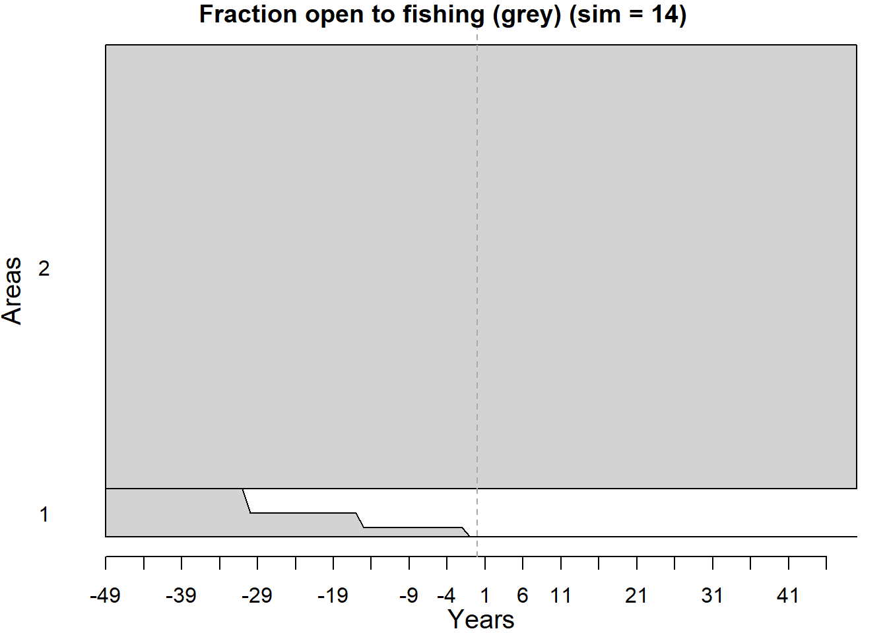
25.2 Size-Specific Natural Mortality
25.2.1 Constant M at age/size
By default DLMtool assumes that natural mortality (M) is constant across age and size classes. However, in many species M is known to vary by size, and is often assumed to be higher for smaller age-classes and reduces as individuals age and grow.
A number of users requested the option to include age or size-specific M and this has now been added to DLMtool.
There are a number of ways to specify age or size-specific M in DLMtool.
25.2.2 Lorenzen function of weight
Natural mortality is often assumed to be a function of weight. Size-specific M can be included in DLMtool following the approach of Lorenzen (1996):
\[M_w = M\left(\frac{W}{W_\infty}\right)^b\]
where \(M_w\) is the natural mortality at weight \(W\), \(M\) is the natural mortality rate of adult fish, \(W_\infty\) is the asymptotic weight, and \(b\) is the allometric scaling factor (Stock@Mexp). Lorezen (1996) found that the exponent \(b\) had an average value of -0.288, with 90% confidence intervals of -0.315 – -0.261 for fish from natural systems.
Because DLMtool uses an age-structured model, M is calculated as a function of age:
\[M_a = M\left(\frac{W_a}{W_\infty}\right)^b\]
where \(M_a\) is natural mortality at age \(a\) and \(W_a\) is the mean weight at age \(a\). M-at-age is then rescaled so that the mean M of adult age classes (mean age of maturity and greater) is equal to the natural mortality rate sampled from the stock object (Stock@M).
The plotM function can be used to visually inspect samples of the M-at-age, -length, and -weight that are generated by the model:
## Warning: 'plotM' is deprecated.
## Use 'plot("M", Stock' instead.
## See help("Deprecated")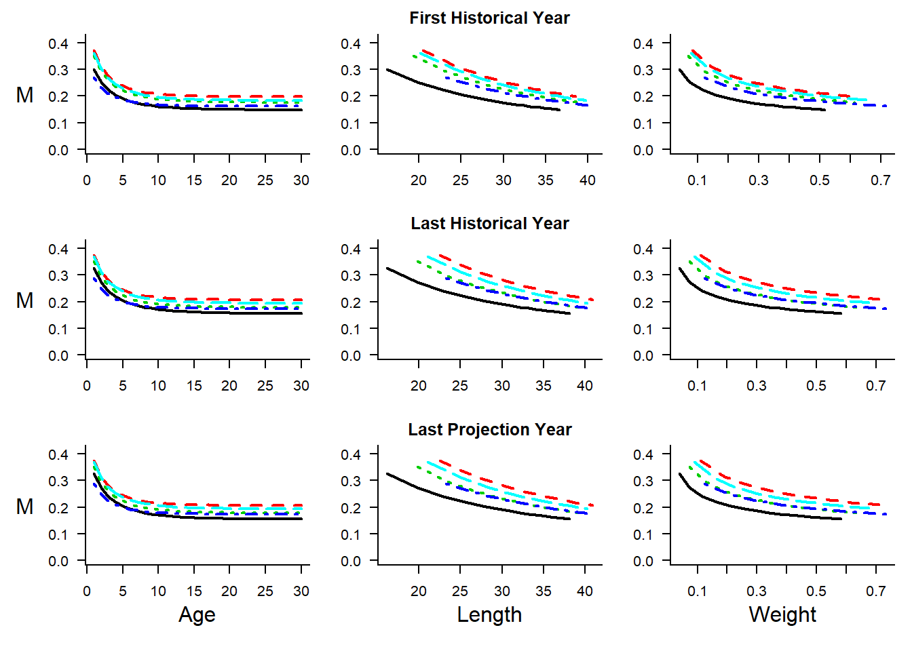
25.2.3 Map Age-Specific M
Usually the M slot contains two values, a lower and upper bound for the constant M-at-age. Users who wish for more control of M-at-age can use the M and M2 slots in the Stock object to directly input values for M-at-age (M for lower bound and M2 for upper bound). maxage values of M must be supplied for slots M and M2. One way to do this is to use the ChooseM function to map out the bounds for age-specific M:
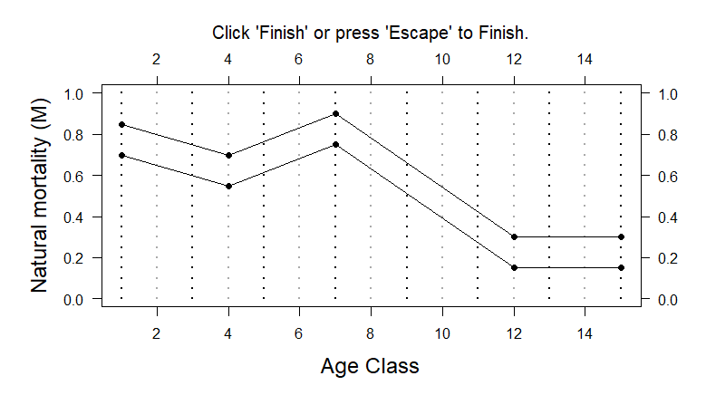
Click here for a larger version of the image.
{kind=link}
Alternatively, users can input the values directly into the M and M2 slots (must be length maxage):
OM <- new("OM", Albacore, Generic_FlatE, Generic_Obs, Perfect_Imp)
OM@M <- c(0.7, 0.65, 0.60, 0.55, 0.61, 0.68, 0.75, 0.63, 0.51, 0.39, 0.27, 0.15, 0.15, 0.15, 0.15)
OM@M2 <- c(0.85, 0.8, 0.75, 0.7, 0.76, 0.83, 0.9, 0.78, 0.66, 0.54, 0.42, 0.3, 0.3, 0.3, 0.3)The plotM function can then be used to visually display samples of the resulting M at age and size:
## Warning: 'plotM' is deprecated.
## Use 'plot("M", Stock' instead.
## See help("Deprecated")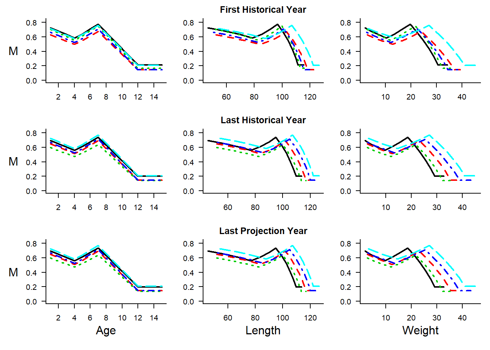
25.2.4 Map Length-Specific M
There is also the option to map length-specific M using the plotting tool:
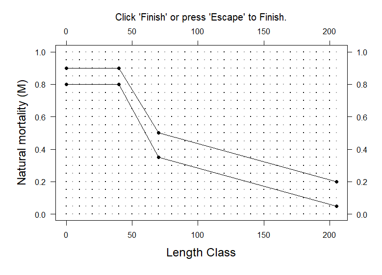
Click here for a larger version of the image.
{kind=link}
This option uses the Custom Parameters feature of DLMtool:
## List of 1
## $ M_at_Length:'data.frame': 42 obs. of 3 variables:
## ..$ Lens: int [1:42] 0 5 10 15 20 25 30 35 40 45 ...
## ..$ M1 : num [1:42] 0.8 0.8 0.8 0.8 0.8 0.8 0.8 0.8 0.8 0.725 ...
## ..$ M2 : num [1:42] 0.9 0.9 0.9 0.9 0.9 ...Again, samples of the resulting M at age and size can be plotted:
## Warning: 'plotM' is deprecated.
## Use 'plot("M", Stock' instead.
## See help("Deprecated")## valid custom parameters (OM@cpars) found:
## M_at_Length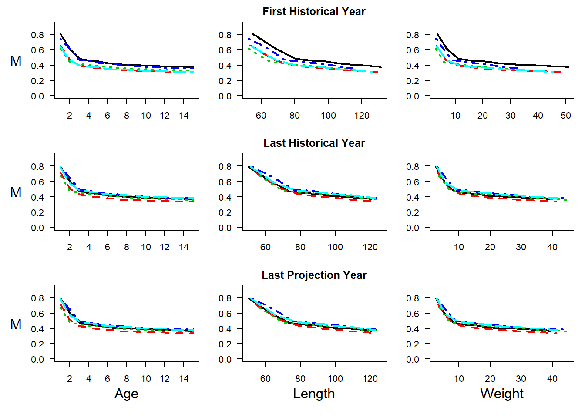
25.3 Selection, Retention and Discard Mortality
Note that if OM@isRel == FALSE the selectivity and retention parameters are either in absolute units, the same units as OM@Linf and OM@L50.
If OM@isRel == TRUE the selectivity and retention parameters are assumed to be multiples of the length at maturity (OM@L50).
25.3.1 Fishery Selection Curve
The fishery selection or vulnerability to the fishing gear in DLMtool is modelled using a double-normal curve and the parameters in the Fleet object: L5 - smallest length at 5% selection, LFS - smallest length at full selection, and Vmaxlen the vulnerability of the largest length class (defined as expected length at maximum age Stock@maxage).
Here we set up a Operating Model with dome-shaped selectivity and plot a sample of the selectivity-at-age and -length using the plotSelect function:
## Warning: 'plotSelect' is deprecated.
## Use 'plot("Selectivity", Fleet, Stock' instead.
## See help("Deprecated")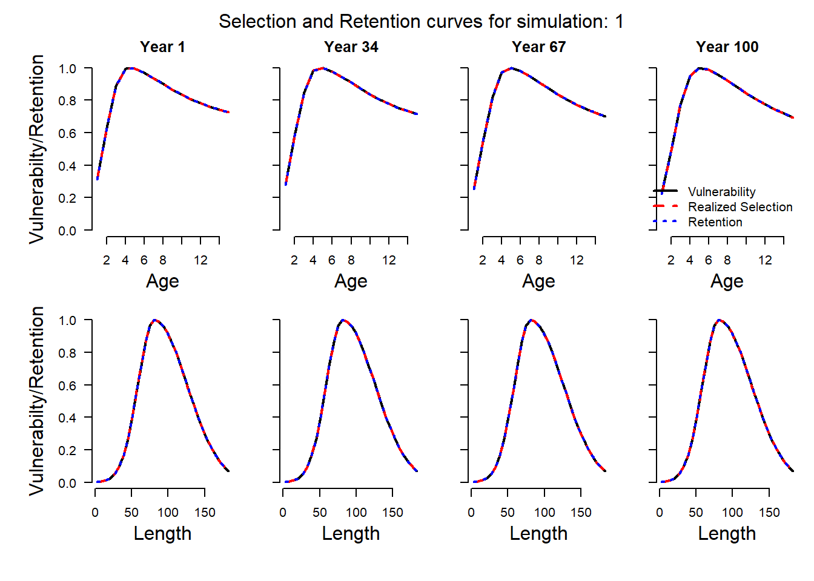
The plot shows three curves - vulnerability, realized selection and retention - in each panel. In this case they are all the same, because the default setting of DLMtool is to assume that all selected fish are retained in the catch.
25.3.2 Fishery Retention Curve
In some cases the fishing gear selects fish (often small sizes) that are not retained in the catch and are discarded at sea. The fishery-retention curve can be specified following the same approach as selectivity, using the following slots in the Fleet or OM object:
LR5- the smallest length at 5% retentionLFR- the smallest length at full retentionRmaxlen- the retention of the largest size class (defined as expected length at maximum ageStock@maxage).
The default values for these parameters are:
## [1] 0 0## [1] 0 0## [1] 1 1meaning that the default assumption is that all size classes are fully retained by the fishery.
The retention curve can be modified by providing values for these slots:
Note that the values in the LR5 and LFR slots must be in the same units as those in the L5 and LFS slots. Here we are specifying the values relative to the size of maturity, and assuming that the fishery discards the smaller sized fish:
## Warning: 'plotSelect' is deprecated.
## Use 'plot("Selectivity", Fleet, Stock' instead.
## See help("Deprecated")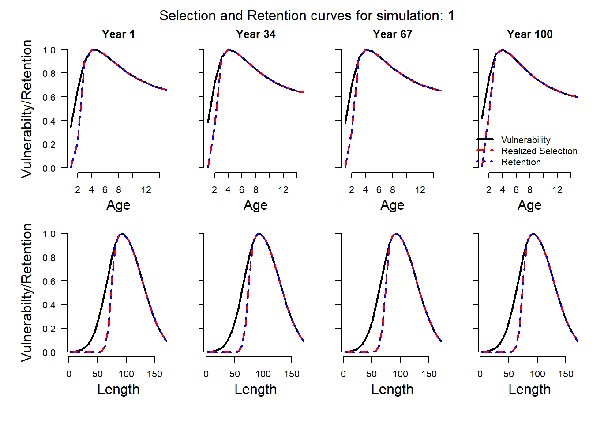
The plot shows that the retention curve for the fishery has shifted to the right, towards larger and older fish, while the vulnerability of the fishing gear remains the same.
Because we are assuming no discard mortality in this case, the realized selection and retention curves are equivalent. This means that although fish of age/length between the vulnerability and retention curves are selected by the fishery, they are discarded with 100% survival and therefore are not removed from the population.
25.3.3 Discard Mortality
The assumption of 100% survival of discarded fish may be unrealistic in many situations. Discard mortality can be specified by the Fdisc slot in the Stock or OM object. The Fdisc slot represents the fraction of discarded fish that die, or \(1-\text{survival}\). Here we assume that between 30 and 50% of discarded fish suffer fishing mortality:
## Warning: 'plotSelect' is deprecated.
## Use 'plot("Selectivity", Fleet, Stock' instead.
## See help("Deprecated")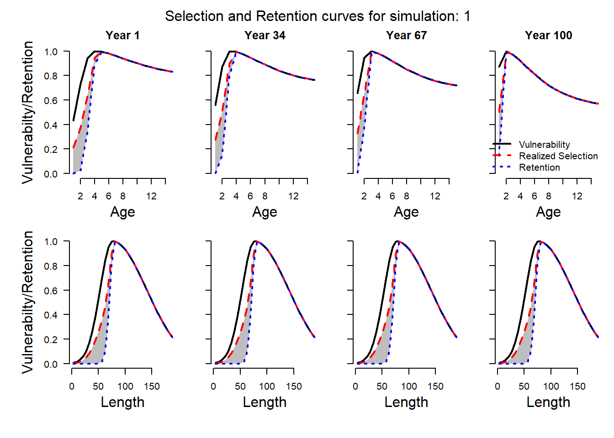
We can see now that the realized selection and the retention curves are different for the age/size classes that are discarded by the fishery. The realized selection curve (dashed red line) represents the actual selectivity of the fish removed from the population.
The retention curve (dotted blue line) shows the age/size classes that are retained by the fishery and appear in the total cathc, catch-at-age, and catch-at-length fishery data.
The shaded gray area between these two curves represents that age/size classes that are caught and killed by the fishery but are discarded and do not appear in the catch statistics.
The gear vulnerability curve remains unchanged, and shows that some individuals in the smaller age/size classes are caught and discarded alive back into the population.
25.3.4 General Discarding
General discarding across all age or size classes can be included using the discarding rate slot DR in the Fleet or OM object.
For example, here we assume that between 10 and 20% of all age/size classes are discarded by the fishery:
Plotting the selectivity and retention curves shows that a proportion of all age and size classes are now discarded, with the survival rate determined by the Fdisc parameter:
## Warning: 'plotSelect' is deprecated.
## Use 'plot("Selectivity", Fleet, Stock' instead.
## See help("Deprecated")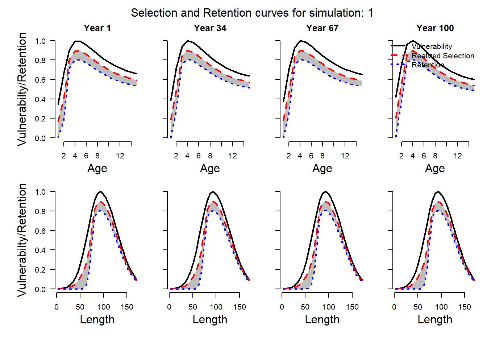